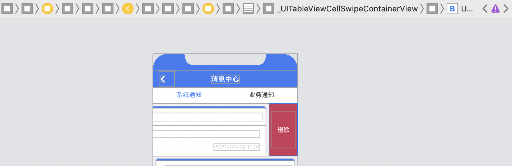
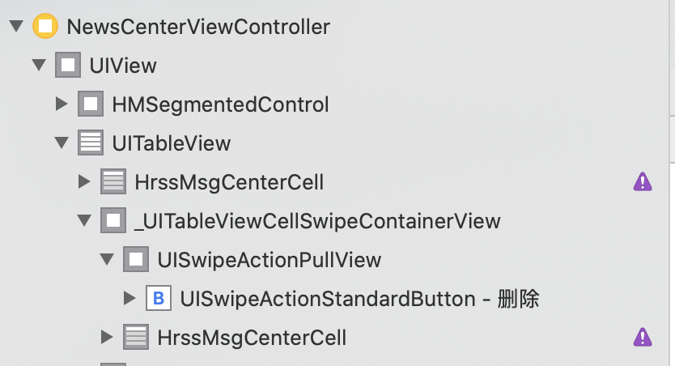
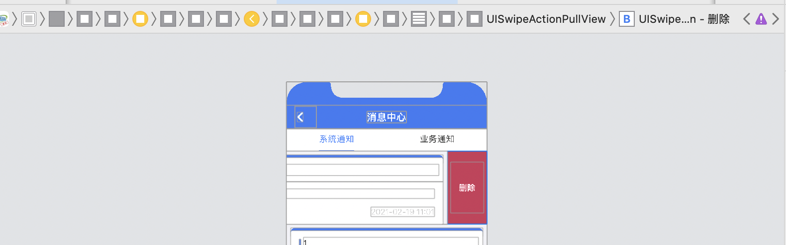
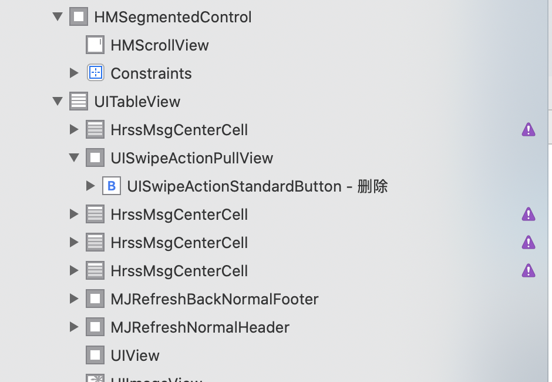

自定义左滑删除键
在iOS 12和iOS 13、iOS 14下，cell左滑删除键属于不同层级。
如果需要对其进行自定义，就需要进行不同的操作。
1
2
3
4
5
6
7
8
9
10
11
12
13
14
15
16
17
18
19
20
21
22
23
24
25
26
27
28
29
30
31
32
33
34
35
36
37
38
39
40
| - (void)tableView:(UITableView *)tableView willBeginEditingRowAtIndexPath:(NSIndexPath *)indexPath
{
NewsCenterModel *model = self.viewModel.tableViewData[indexPath.row];
CGFloat cellHeight = 0;
if (model.msgValue.length > 0) {
cellHeight = [HrssMsgCenterCell setCellHeightWithModel:model] - 8 - 7;
} else {
cellHeight = [HrssMsgCenterCell setCellHeightWithModel:model] - 8;
}
for (UIView *subview in tableView.subviews) {
if ([NSStringFromClass([subview class]) isEqualToString:@"UISwipeActionPullView"]) {
if ([NSStringFromClass([subview.subviews[0] class]) isEqualToString:@"UISwipeActionStandardButton"]) {
CGRect newFrame = subview.subviews[0].frame;
newFrame = CGRectMake(0, 8, newFrame.size.width, cellHeight);
subview.subviews[0].frame = newFrame;
subview.backgroundColor = [UIColor groupTableViewBackgroundColor];
}
}
if ([NSStringFromClass([subview class]) isEqualToString:@"_UITableViewCellSwipeContainerView"]) {
UIView *swipeActionPullView = subview.subviews[0];
if ([NSStringFromClass([swipeActionPullView class]) isEqualToString:@"UISwipeActionPullView"]) {
UIView *swipeActionStandardButton = swipeActionPullView.subviews[0];
if ([NSStringFromClass([swipeActionStandardButton class]) isEqualToString:@"UISwipeActionStandardButton"]) {
CGRect newFrame = swipeActionStandardButton.frame;
newFrame = CGRectMake(kSCREEN_WIDTH - newFrame.size.width, 8, newFrame.size.width, cellHeight);
swipeActionStandardButton.frame = newFrame;
swipeActionPullView.frame = newFrame;
swipeActionPullView.backgroundColor = [UIColor groupTableViewBackgroundColor];
}
}
}
}
}
|

iOS 13/iOS 14

iOS 13/iOS 14

iOS 12

iOS 12
删除cell的分割线
在cell.m中加上这一个方法即可
1
2
3
4
5
| - (void)addSubview:(UIView *)view
{
if (![view isKindOfClass:[NSClassFromString(@"_UITableViewCellSeparatorView") class]] && view)
[super addSubview:view];
}
|